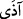

ALLAH KÂLBDEKİNİ
EN İYİ BİLEN
DEĞİL MİDİR?
10. İnsanlardan kimi vardır ki: “Allah’a inandık” der; fakat Allah uğrunda
eziyete uğratıldığı zaman, insanların işkencesini Allah’ın azâbı gibi tutar. Halbuki
Rabbinden bir nusret gelecek olsa, mutlaka, “Doğrusu biz de sizinle beraberdik”
derler. İyi de, Allah, herkesin kalbindekileri en iyi bilen değil midir?
11. Allah, elbette (O’na gönülden) îman edenleri de bilir, iki yüzlüleri de bilir
(ortaya çıkaracaktır).
12. Kâfirler, îman edenlere: Bizim yolumuza uyun, sizin günahlarınızı biz
yüklenelim, derler. Halbuki onların hiçbir günahını yüklenecek değillerdir.
Gerçekte onlar, kesinlikle yalan söylemektedirler.
13. (Fakat gerçek şu ki) elbette kendi yüklerini (veballerini), kendi yükleriyle
birlikte nice yükleri taşıyacaklar ve uydurup durdukları şeylerden kıyamet günü
mutlaka sorguya çekileceklerdir.
“İnsanlardan kimi vardır ki...” ifâdesi, ihtivâ ettiği mânâ (mazmûn) itibârıyla
mübtedâdır. “İnsanlardan kimi, bir kısmı” takdirindedir. Haberi, “Allah’a inandık” der,
cümlesidir.
“Fakat Allah uğrunda eziyete uğratıldığı zaman,” yâni kâfirler, onlara îmanlarından
dolayı azâb ve işkence ettikleri zaman... demektir.
“__WORD__ (ûziye)” fiili “__WORD__ (êzâ)” fiilinin meçhulüdür. Bu fiilin mastarı, “__WORD__(îzâ)”şeklinde değil, “__WORD__ (eziyet ve ezâ)” şeklindedir. Nitekim el-Kâmûs’ta da
bu şekilde kaydedilmiştir. “Eziyet”, insanın nefsine, bedenine veya âile efrâdına dünya